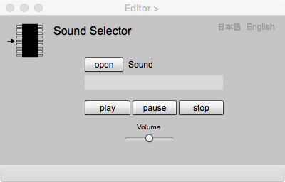

Sound Selector
Sound Selector acquires audio file (mp3) as the attribute of a feature. Audio data becomes an attribute by clicking "add" button in Editor page after opening the audio in Sound page. In gittok, sound data is an url to indicate where that data is stored. The data type is SoundURL.
Sound Selector

Figure 1. Page of Sound Selector
Fields
Sound
URL of of the audio file.
Buttons
open
Audio file is opened by clicking this button. Audio file should be stored in the folder "sounds" located under the project folder.
play
Sound is played by clicking this button.
pause
Sound is paused by clicking this button. The label is replaced by "restart" after clicking the button. Siund can be restared by clicking "restart" button.
stop
Sound is stopped by clicking this button.
Volume
The volume of the sound changed by moving the slider.
日本語
今あなたが読んでいるドキュメントが表示されます．
English
You can read the tutorial written in English.